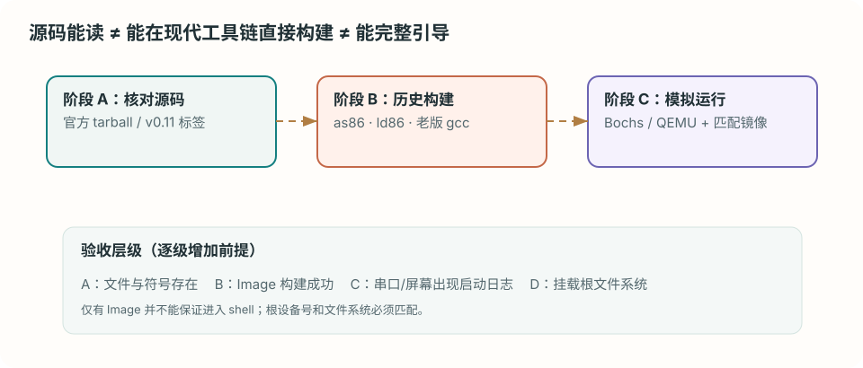

搭建可以验证结论的 Linux 0.11 实验台
把源码阅读、历史工具链构建、模拟器引导分开验证；先保证结论可复核，再尝试运行。
源码实验 · 分层验收三种“成功”不是一回事
有人下载了 Linux 0.11 源码，就声称“实验环境搭好了”；有人把 Image 写入软盘镜像，又认为“内核能启动”；也有人看到 Loading system ...，就推断已经挂载根文件系统。这三者都不等价。

本章给出不依赖古老模拟器的 A 阶段，以及 B/C 阶段的明确前提。所有可能因宿主机版本而失败的命令都会标注条件，而不是假装在任何平台都能一键执行。
A：从可信归档拿到固定版本
优先使用 kernel.org 的历史源代码归档，而不是从不明站点下载带可执行文件的整合包。官方目录提供 linux-0.11.tar.gz 和校验文件；请按照官方校验清单核对下载文件，不要只凭文件名相信版本。
mkdir -p ~/linux011-study
cd ~/linux011-study
curl -fLO https://www.kernel.org/pub/linux/kernel/Historic/old-versions/impure/linux-0.11.tar.gz
# 查看归档内容；先确认路径布局，再决定解压位置
tar -tzf linux-0.11.tar.gz | head -30
mkdir -p source
tar -xzf linux-0.11.tar.gz -C source
find source -name 'bootsect.s' -o -name 'setup.s' -o -name 'head.s'如果原站点 URL 调整，在 kernel.org 的发布目录 重新定位文件。归档可能采用不带顶级目录的存储布局，因此要先执行 tar -tzf 检查结构。练习目标是找到三个启动文件，而不是“编译成功”。
源码级自检：三条可独立验证的事实
进入包含 Makefile 的目录，执行以下只读检索。在不同打包方式下，实际目录可能是 source/linux/ 或 source/，请通过 find 找到正确位置。
grep -n 'SETUPLEN\|SYSSEG\|INITSEG' boot/bootsect.s
grep -n '0x88\|0xD1\|lmsw\|jmpi' boot/setup.s
grep -n 'pg0\|pg1\|pg2\|pg3\|setup_paging' boot/head.s
grep -n 'Image:\|tools/build' Makefile预期观察：SETUPLEN=4、SYSSEG=0x1000、setup.s 中 BIOS AH=0x88、head.s 使用四张初始页表，以及 Makefile 中输出 Image 的规则。读代码要先看事实是否存在，再学习解释。
B：为什么现代 gcc 不一定能编译
Linux 0.11 的原始 Makefile 依赖早期 as86 / ld86、gas、gld 和已变化的编译选项。现代 GNU 工具链、架构默认值、链接器和头文件布局都可能与 1991 年的假设冲突。因此 本教程不把直接运行 make 作为 A 阶段验收条件。
要真的编译，选择经过验证的受限历史工具链容器或可复现的教学 fork，固定具体版本，并记录修改过的补丁。教学 fork 的可编译性不能倒推出原版源码在现代发行版上也能直接编译。
command -v as86 || true
command -v ld86 || true
command -v qemu-system-i386 || true
grep -n '^AS86\|^LD86\|^AS =\|^LD =' Makefile成功的 B 阶段应至少有可复核的工具链版本、构建日志、最终 Image 文件、构建时使用的补丁和源代码 SHA-256；仅仅找到一个网上下载的 Image 不算“重现了构建”。
C：模拟器中验证的最小边界
Bochs 适合观察早期 x86 寄存器与中断；QEMU 可较方便地启动已有且兼容的磁盘映像。下面命令只在你已经拥有匹配的、可信的软盘启动映像时使用，floppy.img 只是占位路径，不是仓库提供的文件。
qemu-system-i386 \
-m 16 \
-drive file=floppy.img,format=raw,if=floppy \
-boot a -no-reboot -monitor stdio这里的镜像必须具有有效引导扇区和正确布局。即使看到了引导消息，ROOT_DEV、硬盘分区及 MINIX 根文件系统仍可能不匹配，导致无法进入用户空间。不要把“看到屏幕输出”包装成“进入 shell”。
记录证据，而不是记录希望
| 检查点 | 可接受证据 | 不能据此断言 |
|---|---|---|
| 源码可读 | 固定 v0.11 路径及检索结果 | 内核可编译 |
| 构建完成 | 工具链版本、补丁、日志、Image 哈希 | 镜像可以完整启动 |
| 引导执行 | 模拟器控制台与停机点 | 根文件系统已挂载 |
| 进入用户态 | 根分区信息、登录提示与命令输出 | 原版可在真实现代机器安全运行 |
为什么只需要源码就可以开始第 4 章的地址推导？（展开核对）
因为装载地址、BIOS 中断参数、复制长度和跳转目标都写在 bootsect.s 及 setup.s 中。阅读和算术验证不需要先运行 1991 年的内核；运行实验用于进一步验证，而不能代替静态分析。
版本、工具与复现实验的来源
- kernel.org Linux 0.11 发布目录：历史源码 tarball、签名和校验清单。
- 原始 Makefile：编译器及连接器变量、构建依赖。
- bootsect.s 与 setup.s：源码检查的具体目标。
- QEMU 系统模拟器命令文档：通用命令行参数语义。
第 4 章从一个不需要真正启动的任务开始：在纸上画出 0x7C00、0x90000、0x90200、0x10000 四个位置。